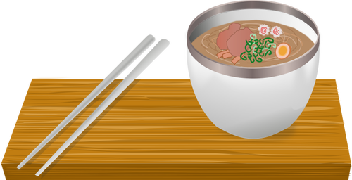
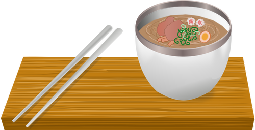

John's QD Ramen
 

Description
This is the Ramen recipe I made for lunch today. Quick and dirty resulting in delicious lunch. I am pretty pretty pretty good!.
Ingredients
- 1.5 tbsp Miso
- 90 g dried Udon
- Delicious Vegetables
- Chili Flakes
- Soy Sauce
- Water or Broth
Steps
- Decide that today is the day for delicious RAMEN!
- Boil a large pot of water, add Udon and cook to taste ~3 or 4 minutes.
- Microwave vegetables to slightly cooked state.
- Blend remaining ingredients and microwave to a boil.
- Add noodles and broth to vegetables
- Enjoy your quick and dirty Ramen